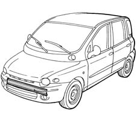
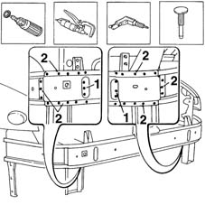
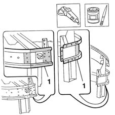
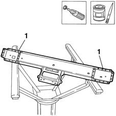
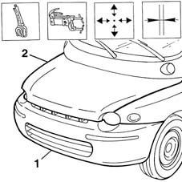
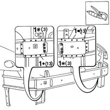
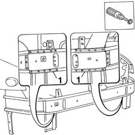
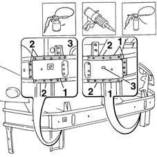

7210A16 R.R. WING LOWER CROSSMEMBER
- Path
- Procedures > 72 PANELS AND FRAME > 7210 REMOVING REFITTING > 7210A STRUCTURAL ELEMENTS (FRONT PART) > 7210A16 R.R. WING LOWER CROSSMEMBER
- Kind
- repair procedure (removal / refitting; the operation number is the code)
- Applies to
- all engines; all production periods
- Interactive page
- https://sloeber94.github.io/elrnDB-fMltpl/en/#/2892302
Applies to: all engines; all production periods
 Removing
Removing
 Refitting
RefittingMove all fouling parts.
Check if any of the connected parts are deformed by checking body alignment dimensions. Use appropriate measurement tools (reference rigs, templates or gauges).
If necessary, straighten the body before cutting the part.

Applies to: all engines; all production periods
Use a rotary brush to expose the spot welds.
1. Drill out the spot welds exposed previously.
2. Use a chamfering machine to remove the spot welds shown in the figure.
Use a chisel and hammer and remove the crossmember from the car.

Applies to: all engines; all production periods
Straighten the panel edges using a mallet and profiled stake.
Use a grinding wheel to remove the spot weld residues.
1. Apply the electroweldable paint finish.

Applies to: all engines; all production periods
Refitting
RemovingUse a rotary brush to remove the rust-proofing treatment from the part.
1. Use electroweldable paint.

Applies to: all engines; all production periods
Fit the part correctly using self-locking grippers.
Tack the part with a few spot welds.
Remove the self-locking grippers.
1. Provisionally fit the bumper.
Fit the bonnet catch.
2. Close the bonnet.
Check that the surrounding gaps are even.

Applies to: all engines; all production periods
1. Use a spot welder to weld the areas shown in the figure.

Applies to: all engines; all production periods
1. Use a rotary brush to clean the newly-welded areas.
Check that the welded parts are correctly positioned.

Applies to: all engines; all production periods
1. Apply rust-proofing to the newly-welded areas.
2. Apply sealant to the joins between part and car.
Apply paint.
3. Apply wax oil in the holes shown in the figure.

Applies to: all engines; all production periods
Refit all fouling parts.